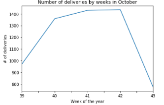
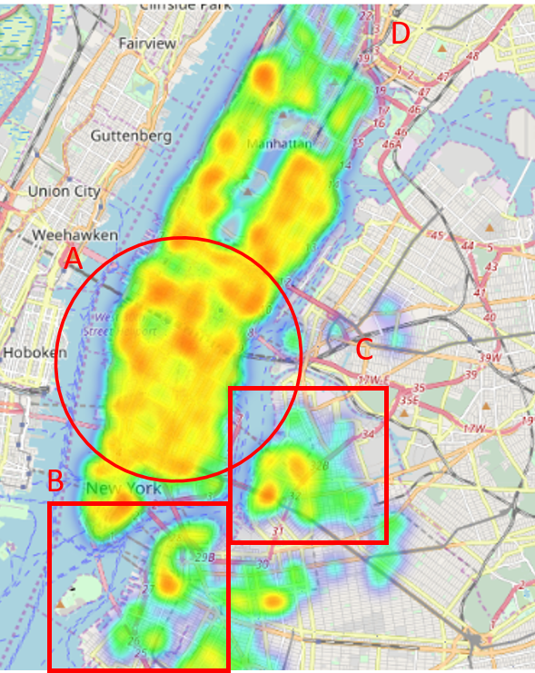
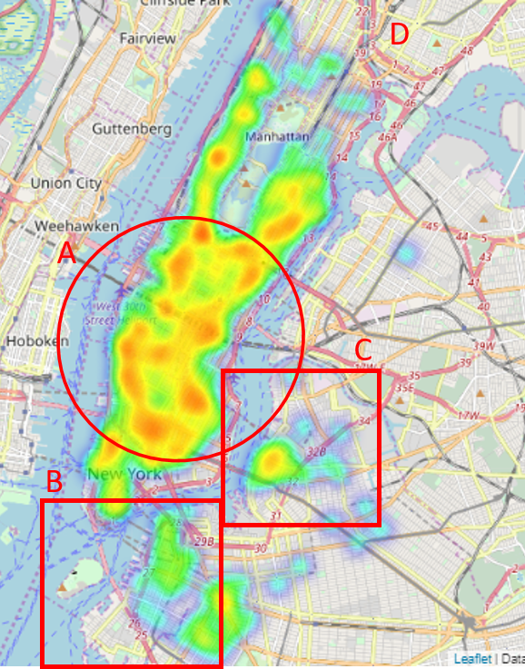
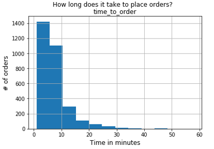

Market Analysis: On-demand delivery platform
The data provided is for an on-demand delivery company, Delivex, providing a platform connecting delivery-partners and customers purchasing a variety of goods.
The platform sends delivery-partners to merchants to purchase and
pickup any items requested by the customer. Whenever possible, Delivex will order the
requested items ahead to save the delivery-partners time. Each time a Delivex delivery is
completed, a record is saved to the Delivex database that contains information about that
delivery. Delivex is growing fast and has just launched in its newest market -- New York
City.
The analysis is for the CEO of Delivex wants to know how things are going in New York. ....He has
mentioned to you that he’s heard reports of data integrity issues.
Analysis
Delivex's business vision is to transform the way goods
move around the city by having anything delivered on-demand.
For my analysis, I will explore 3 key areas:
Revenue & Growth: How is the health of the business? Is Delivex customer base growing? Are more deliveries being made in the city? Can Delivex sustain its operations in New York City?
Operations: How quickly are deliveries being made? How precisely are deliveries being made?
Technology: How easy is it to place orders on the platform?
Python code analysis found here. Data found here. Slides found here.
Revenue & Growth
5214 898 3192 578
deliveries delivery-partners customers merchants
In the month of October, there were 5214 deliveries from 3192 merchants made by 578 delivery-partners to 3192 customers.
The top 10 merchants completed only 3% of deliveries. This indicates that Delivex is fufiling a part of it's business vision to have "anything" delivered on-demand. 29% of deliveries were completed by the top 10 delivery-partners, and top 10 customers made 12% of those orders.
There was an upward trend in the number of deliveries made each week for this month. Deliveries increased by xx% week-over-week.

*Data for entire 43rd week not provided.
Operations
What are the most popular delivery areas?
Data for delivery pick-up location (where available) and delivery drop-off location is available. Heat maps for the delivery pick-up and drop-off locations are found here and here for further drill down.
Drop-off Location Heatmap
Pick-up Location Heatmap


Most pick-up locations are within shape A. Drop-off locations are more distributed across the city (across shape A – D).
When are most on-demand orders being made?
DEMAND


From the above charts, in a 7 day week the highest demand is observed on Sundays. In a 24 hour period, highest demand is observed between the hours of 6 and 7 pm local time.
SUPPLY
How are the delivery-partners getting around?

Over 70% of deliveries are completed on bicycles. 91.7% of deliveries are completed on bicycles and in cars.
Delivery Time by vehicle type
Time taken to arrive at pick-up location Time taken to arrive at the drop-off location (from pick-up)

On average, deliveries are made 20% faster on bicycles than in cars.
| Bicycle | Car | Other | |
|---|---|---|---|
| Time to reach pick-up location (mins) | 11.7 | 15.5 | 14.7 |
| Time to reach drop-off location (mins) | 13.2 | 17.0 | 15.5 |
| Total delivery time (mins) | 44.0 | 52.0 | 49.4 |
Technology
From the data provided, about 83% of orders* took 10 minutes or less to be completed.

*Data for time taken to complete the order is missing for about 50% of deliveries. Analysis is on 2500+ deliveries, which is a significant sample.
Some data quality and integrity issues were identified during analysis.
• 32 duplicate records found in data provided
• There is no primary key (unique) to identify records. When multiple items are ordered in a single delivery, the delivery data is recorded for each item using the same delivery ID.
• Up to 50% records have some missing values. From initial analysis, some data is missing by design. For example, when the order requests for inventory on hand, data for 'when_the_dpartner_arrived_at_pickup' and 'when_the_dpartner_left_pickup' is unavailable. The missing data may also skew analysis.
• There are some data inconsistencies in file provided For example, data recorded for item categories include, “A la Cart” and “A la Carte”, “Appetizer” and “Appetizers”
Recoomendations from Analysis
Revenue & Growth:
• Cluster & cohort analysis to better understand customers and behavior
• Model customer behavior/journey to understand customer funnel, churn & retention
• Integrate on-demand delivery data with external data sources e.g. NY demographic data, real estate prices, and so on, to gain for further insights
Operations:
• Provide incentives for delivery-partners delivering with optimal vehicle type. (Statistically significant efficiencies from the cost of delivery, time to deliver, etc.). Incentives could be financial (e.g bonuses) or non-financial (e.g. badges, or points earned on delivery leaderboard)
• Further analysis into customer on-demand ordering behaviour. For example, why are there more deliveries on Sunday?
• Cleanse data and conduct analysis on favorite places and frequently order items. Delivery partners can stock up on these items or Delivex can enter into partnerships with customer's favorite places.
Technology:
• Discuss with product & engineering teams about application and database design to understand trade off between user friction and collecting data.
• Work with operations to standardize the process for collecting data and ensuring data quality. For example, new process could ensure that the delivery partners are entering their receipts to reduce missing values and data inconsistencies
• Validate data format and database constraints
Data Available:
The data available is for the month of October, from October 1, 2016 - October 30, 2016
Job_ID -- > a unique identifier of a delivery
Customer_id → a unique identifier for the Delivex customer
dpartner_id → a unique identifier for the delivery-partner who completed the delivery
vehicle_type → The method of transport the delivery-partner used to complete the delivery
pickup_place → The name of the Pickup location
place_category → A categorization of the Pickup location
Item_name → the name of the item requested
Item_quantity → how many of that item was requested
Item_category_name → categorization provided by merchant, think “appetizers”,
“soups” etc
How_long_it_took_to_order → how long it took to place the order [interval]
pickup_lat → the coordinates of the pickup location
pickup_lon → the coordinates of the pickup location
dropoff_lat → the coordinations of the dropoff location
dropoff_lon → the coordinations of the dropoff location
when_the_delivery_started→ localized timestamp representing when the delivery
began
when_the_dpartner_arrived_at_pickup → localized timestamp representing when the
delivery-partner arrived at the pickup location
when_the_dpartner_left_pickup → localized timestamp representing when the
delivery-partner left the pickup location
when_the_dpartner_arrived_at_dropoff → localized timestamp representing when the
delivery-partner reached the customer